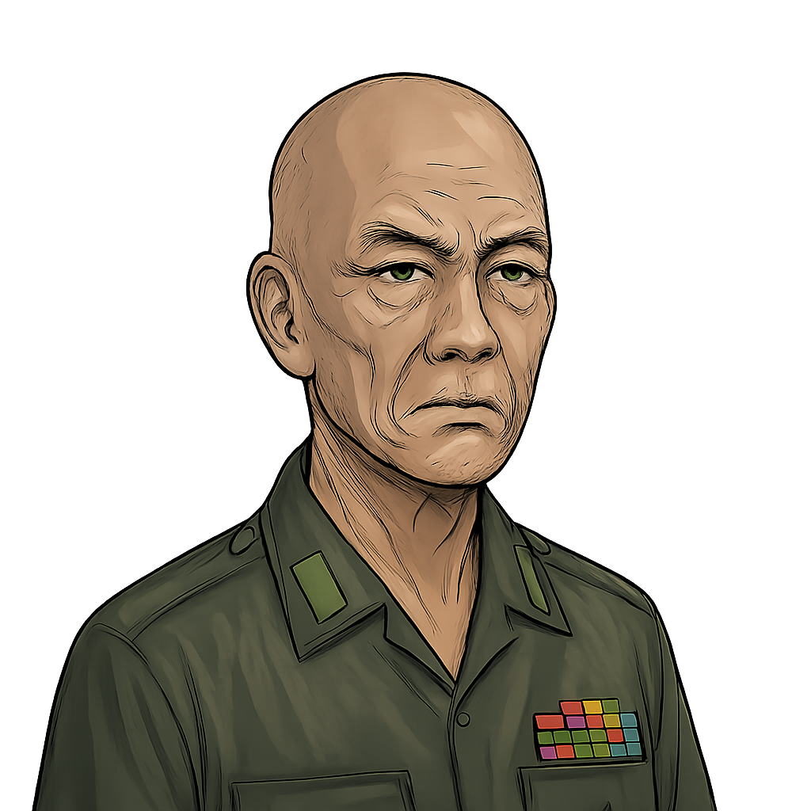

Dr. Thida (Expertin)
General Aung (Militär)
...
Die Chronologie des Versagens (April/Mai 2008)
 22.-28. April: Die WarnungIndische Meteorologen warnen die Junta vor Zyklon-Bildung im Golf von Bengalen.
22.-28. April: Die WarnungIndische Meteorologen warnen die Junta vor Zyklon-Bildung im Golf von Bengalen.
 2. Mai: Landfall & ZerstörungNargis trifft mit Kat. 4 auf das Delta. Keine Warnung für die Bevölkerung.
2. Mai: Landfall & ZerstörungNargis trifft mit Kat. 4 auf das Delta. Keine Warnung für die Bevölkerung.

3.-10. Mai: Das ReferendumDie Junta führt das Verfassungsreferendum durch und blockiert internationale Hilfe.
Verfolgen Sie die Ereignisse.
Das Ereignis: Zyklon Nargis trifft das Irawadi-Delta

Abb. 1: Überflutungsgebiet des Zyklons Nargis
Datum: 2. Mai 2008
Stärke: Kategorie 4beim Auftreffen auf Land
Wind: >210 km/hanhaltend
Sturmflut: Bis zu 5 Meter hoch
Überflutung: Bis zu 50 km landeinwärts
Schaden: >10 Mrd. US-Dollartödlichster Zyklon im Indischen Ozean seit 1970